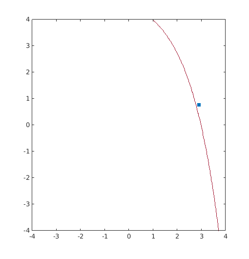
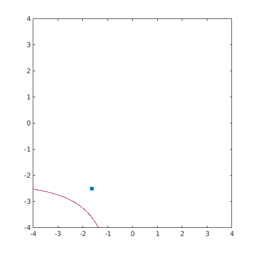
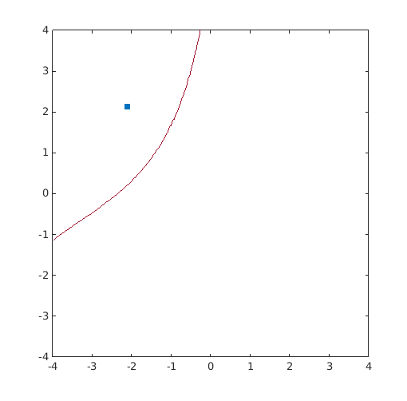

Examples / Reliability assessment / iform
This file is a complete demo of the capability of the iform function from the CODES toolbox.
Contents
Documentation
The documentation for the iform function can be found here. The examples used are taken from Youn et al. (2003).
Set rng
Set random number generator seed:
rng(0)
Example 1: Convex
Compute the MPTP on a simple 2D convex problem
g=@(x)-exp(x(:,1)-7)-x(:,2)+10; T=@(x)(x-6)/0.8; Tinv=@(u)u*0.8+6; res_sqp=CODES.reliability.iform(g,2,3,'solver','sqp','Tinv',Tinv); res_amv=CODES.reliability.iform(g,2,3,'solver','amv','Tinv',Tinv); res_cmv=CODES.reliability.iform(g,2,3,'solver','cmv','Tinv',Tinv); res_hmv=CODES.reliability.iform(g,2,3,'solver','hmv','Tinv',Tinv); CODES.common.disp_matrix([res_sqp.LS_count res_sqp.MPTP res_sqp.PPM;... res_amv.LS_count res_amv.MPTP res_amv.PPM;... res_cmv.LS_count res_cmv.MPTP res_cmv.PPM;... res_hmv.LS_count res_hmv.MPTP res_hmv.PPM],... {'SQP','AMV','CMV','HMV'},... {'# func. call','MPTP_1','MPTP_2','PPM'})
# func. call MPTP_1 MPTP_2 PPM SQP 35 8.31845 6.62033 -0.357938 AMV 22 8.31827 6.62098 -0.357937 CMV 37 8.31765 6.6233 -0.357931 HMV 22 8.31827 6.62098 -0.357937
Provide plot
[X,Y]=meshgrid(linspace(-4,4,100)); Z=reshape(g(Tinv([X(:) Y(:)])),size(X)); figure('Position',[200 200 500 500]) Colors=get(gca,'ColorOrder'); contour(X,Y,Z,[0 0],'Color',Colors(end,:)) hold on u_MPP=T(res_sqp.MPTP); plot(u_MPP(1),u_MPP(2),'s',... 'MarkerFaceColor',Colors(1,:),'MarkerEdgeColor',Colors(1,:))
Example 2: Concave
Compute the MPTP on a simple 2D concave problem
g=@(x)(exp(0.8*x(:,1)-1.2)+exp(0.7*x(:,2)-0.6)-5)/10; T=@(x)bsxfun(@rdivide,bsxfun(@minus,x,[4 5]),[0.8 0.8]); Tinv=@(u)bsxfun(@plus,bsxfun(@times,u,[0.8 0.8]),[4 5]); res_sqp=CODES.reliability.iform(g,2,3,'solver','sqp','Tinv',Tinv); res_amv=CODES.reliability.iform(g,2,3,'solver','amv','Tinv',Tinv); res_cmv=CODES.reliability.iform(g,2,3,'solver','cmv','Tinv',Tinv); res_hmv=CODES.reliability.iform(g,2,3,'solver','hmv','Tinv',Tinv); CODES.common.disp_matrix([res_sqp.LS_count res_sqp.MPTP res_sqp.PPM;... res_amv.LS_count res_amv.MPTP res_amv.PPM;... res_cmv.LS_count res_cmv.MPTP res_cmv.PPM;... res_hmv.LS_count res_hmv.MPTP res_hmv.PPM],... {'SQP','AMV','CMV','HMV'},... {'# func. call','MPTP_1','MPTP_2','PPM'})
# func. call MPTP_1 MPTP_2 PPM SQP 21 2.6807 2.99514 0.203815 AMV 301 1.98085 3.70268 0.379841 CMV 34 2.67694 2.99763 0.20382 HMV 34 2.67694 2.99763 0.20382
Provide plot
[X,Y]=meshgrid(linspace(-4,4,100)); Z=reshape(g(Tinv([X(:) Y(:)])),size(X)); figure('Position',[200 200 500 500]) Colors=get(gca,'ColorOrder'); contour(X,Y,Z,[0 0],'Color',Colors(end,:)) hold on u_MPP=T(res_sqp.MPTP); plot(u_MPP(1),u_MPP(2),'s',... 'MarkerFaceColor',Colors(1,:),'MarkerEdgeColor',Colors(1,:))
Example 3: Concave
Compute the MPTP on a simple 2D concave problem
g=@(x)0.3*x(:,1).^2.*x(:,2)-x(:,2)+0.8*x(:,1)+1; T=@(x)bsxfun(@rdivide,bsxfun(@minus,x,[1.3 1]),[0.55 0.55]); Tinv=@(u)bsxfun(@plus,bsxfun(@times,u,[0.55 0.55]),[1.3 1]); res_sqp=CODES.reliability.iform(g,2,3,'solver','sqp','Tinv',Tinv); res_amv=CODES.reliability.iform(g,2,3,'solver','amv','Tinv',Tinv); res_cmv=CODES.reliability.iform(g,2,3,'solver','cmv','Tinv',Tinv); res_hmv=CODES.reliability.iform(g,2,3,'solver','hmv','Tinv',Tinv); CODES.common.disp_matrix([res_sqp.LS_count res_sqp.MPTP res_sqp.PPM;... res_amv.LS_count res_amv.MPTP res_amv.PPM;... res_cmv.LS_count res_cmv.MPTP res_cmv.PPM;... res_hmv.LS_count res_hmv.MPTP res_hmv.PPM],... {'SQP','AMV','CMV','HMV'},... {'# func. call','MPTP_1','MPTP_2','PPM'})
# func. call MPTP_1 MPTP_2 PPM SQP 26 0.140039 2.17345 -1.04864 AMV 73 0.153993 2.18708 -1.04833 CMV 16 0.0794953 2.11035 -1.04275 HMV 16 0.0794953 2.11035 -1.04275
Provide plot
[X,Y]=meshgrid(linspace(-4,4,100)); Z=reshape(g(Tinv([X(:) Y(:)])),size(X)); figure('Position',[200 200 500 500]) Colors=get(gca,'ColorOrder'); contour(X,Y,Z,[0 0],'Color',Colors(end,:)) hold on u_MPP=T(res_sqp.MPTP); plot(u_MPP(1),u_MPP(2),'s',... 'MarkerFaceColor',Colors(1,:),'MarkerEdgeColor',Colors(1,:))
Sensitivities
Here is ans example on how to compute sensitivities of the probabilistic performance measure. See iform help for details on the options.
g=@(x,z)CODES.test.lin([x repmat(z,size(x,1),1)]); T=@(x,mu)norminv(expcdf(x,mu)); Tinv=@(u,mu)expinv(normcdf(u),mu); z=0; mu=0.5; delta=1e-3; res_iform=CODES.reliability.iform(@(x)g(x,z),2,2,... 'Tinv',@(x)Tinv(x,mu),'eps',1e-5,'gz',g,'z',z,... 'Tinvtheta',Tinv,'T',T,'theta',mu); res_iform_theta=CODES.reliability.iform(@(x)g(x,z),2,2,... 'Tinv',@(x)Tinv(x,mu+delta),'eps',1e-5); res_iform_z=CODES.reliability.iform(@(x)g(x,z+delta),2,2,... 'Tinv',@(x)Tinv(x,mu),'eps',1e-5); dGdmu=(res_iform_theta.PPM-res_iform.PPM)/delta; dGdz=(res_iform_z.PPM-res_iform.PPM)/delta; CODES.common.disp_matrix([dGdz res_iform.dPPMdz;dGdmu res_iform.dPPMdtheta],... {'dPPM/dz','dPPM/dtheta'},... {'FD','Analytical'})
FD Analytical
dPPM/dz -0.57735 -0.57735
dPPM/dtheta -2.93612 -2.93612
References
- Youn et al. (2003): Youn, B. D., Choi, K. K., & Park, Y. H. (2003). Hybrid Analysis Method for Reliability-Based Design Optimization. Journal of Mechanical Design, 125(2), 221. DOI
Copyright © 2015 Computational Optimal Design of Engineering Systems (CODES) Laboratory. University of Arizona.
|
|
Computational Optimal Design of Engineering Systems |

|